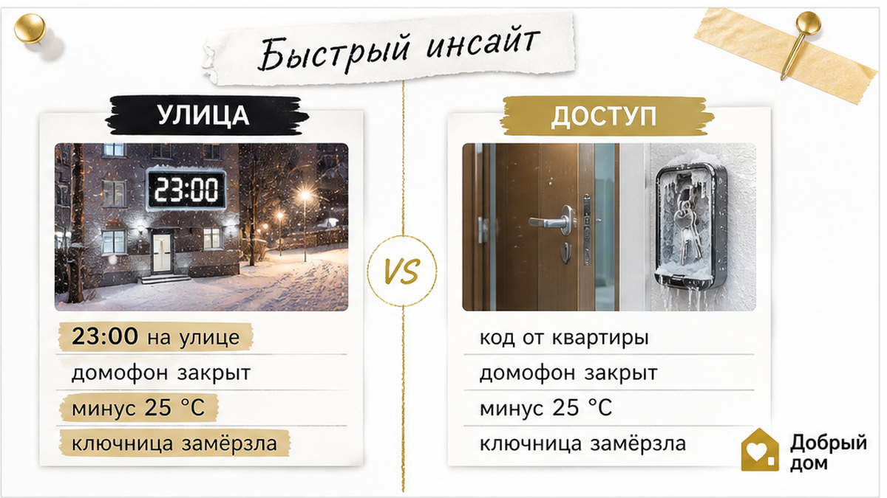
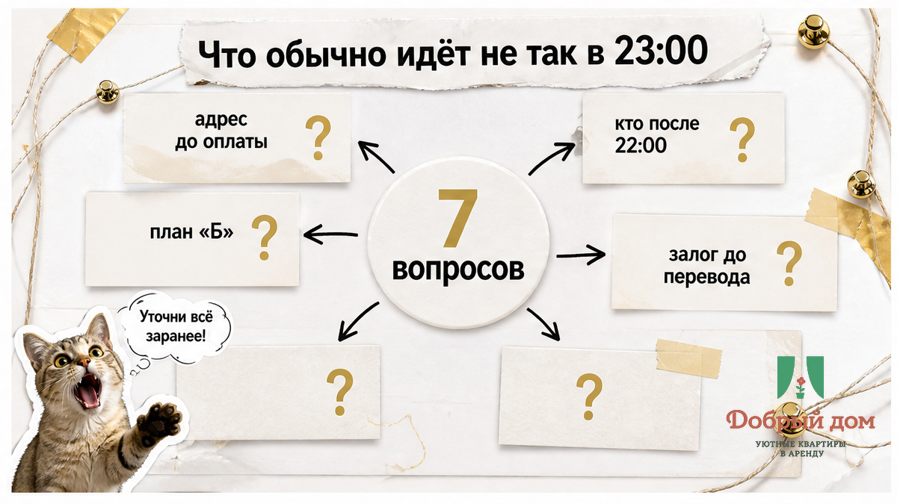
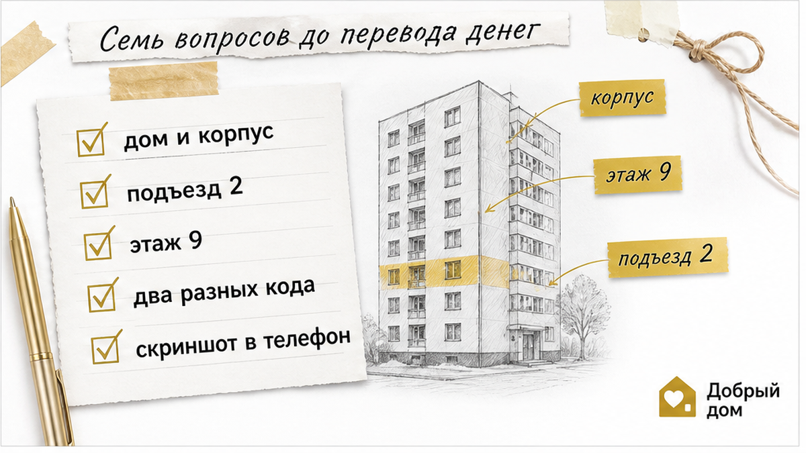
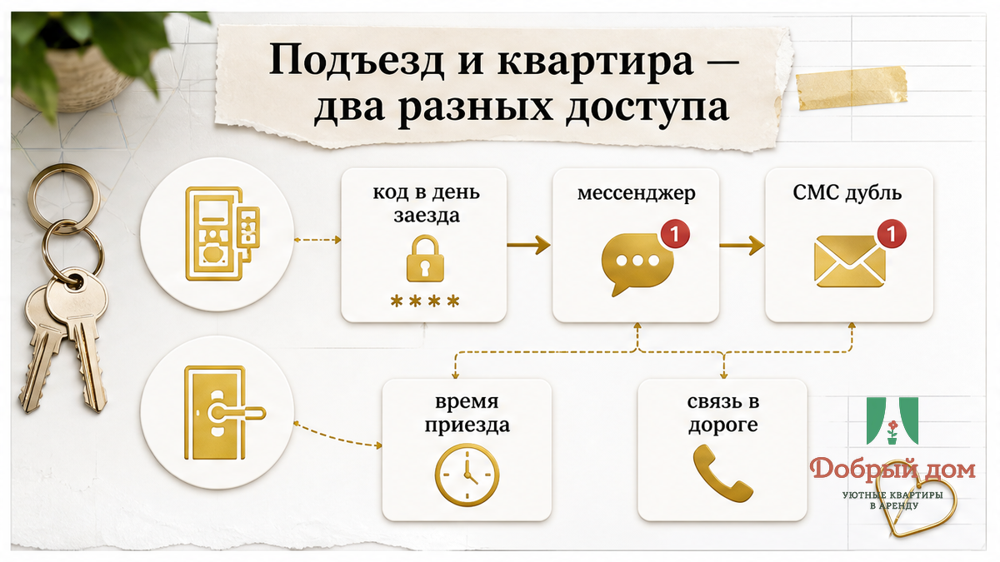
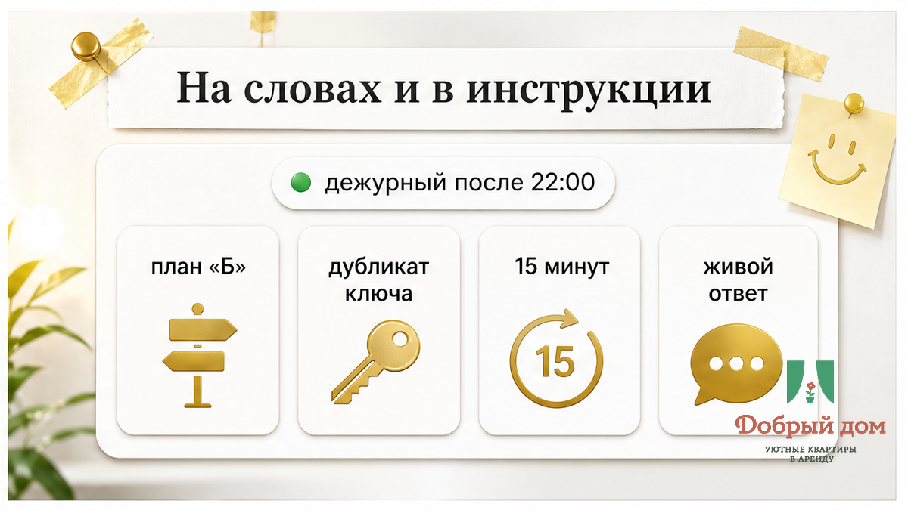
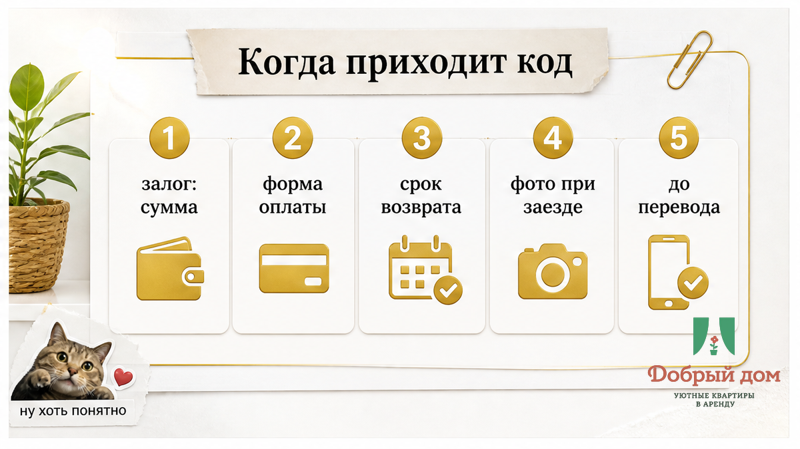
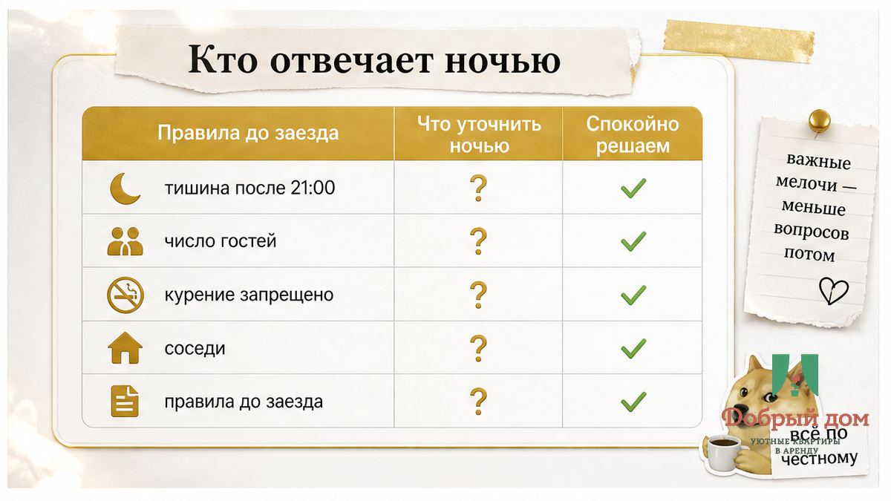

Одиннадцать вечера. Вы у подъезда, чемодан на снегу, в чате — код.
Код не подходит.
Или подходит, но не туда: подъезд открылся, вы поднялись на четвёртый этаж, а ключница у двери пустая. Телефон хозяина отвечает голосом оператора: «абонент недоступен».
Это самая частая история посуточной аренды. И почти никогда — про мошенников.
Просто заселение без встречи собрано из нескольких отдельных шагов. Подъезд, квартира, ключница, человек на связи. Любой из шагов могли не проговорить заранее — и он ломается ровно в тот момент, когда вы стоите на улице.


Сценариев ровно три, и они повторяются из года в год.
Первый. Прислали код от квартиры и забыли про подъезд. Гость стоит на улице, домофон молчит, а ключ буквально за дверью — до него полтора метра и один недостающий код.
Второй. Адрес правильный, но дом с корпусами. В Тюмени это сплошь и рядом: новые ЖК на Московском тракте, застройка на Широтной, кварталы в Заречье. «Дом 12, корпус 3» и «дом 12» — две разные точки на карте и два разных входа. Навигатор ведёт уверенно, только не к вашей двери.
Третий. Зима. Минус двадцать пять, ключница промёрзла, колёсики не проворачиваются, пальцы не гнутся. Код верный. Замок замёрз.
Все три решаются заранее. Пять минут переписки до оплаты — и ночь проходит скучно, как и должна.

Спросите ровно это. Ответы должны быть конкретными, а не «всё пришлём, не переживайте».
Если на седьмой вопрос ответа нет — дальше можно не читать. Плохо не то, что на двери механическая ключница вместо электронного замка. Плохо, когда у хозяина нет плана «Б».

Разделите их в голове сразу. Это два независимых замка.
Подъезд. Домофон с кодом, магнитный ключ или консьерж со списком заселяющихся. Код домофона обычно общий для дома и меняется редко. А вот магнитный ключ — физический предмет: его надо где-то забрать. Здесь и появляется ключница.
Квартира. Либо сейф-ключница с механическим кодом, либо электронный замок с цифровым кодом на срок брони, либо ключ у консьержа под ваше имя.
И один вопрос, который забывают задать почти все: где именно висит ключница.
На двери квартиры? На входе в подъезд? На решётке во дворе, на щитке? Если снаружи — вам нужен только её код. Если внутри подъезда — сначала нужен домофон, и без него вы никуда не попадёте, сколько бы цифр вам ни прислали.
Нормальная инструкция выглядит как маршрут, а не как набор цифр:
«Дом 12, корпус 3, подъезд 2 со стороны двора, код домофона 1234, лифт на 9 этаж, ключница слева от двери 187, код 5678, ключей два — от квартиры и таблетка от подъезда».
Прочитали и уже видите путь. Вот к такому тексту и стоит стремиться.

Разница между обещанием и рабочим доступом обычно вот такая.
| В переписке до брони | Что за этим стоит на деле |
|---|---|
| «Ключи будут в ключнице» | Ключница может висеть внутри подъезда — нужен ещё и код домофона |
| «Адрес пришлём» | Дом, корпус, подъезд и этаж вы вправе узнать до оплаты |
| «Мы всегда на связи» | Кто дежурит после 22:00 и в какой срок отвечает |
| «Заселение круглосуточно» | Поздний заезд бывает отдельной позицией в цене |
| «Залог вернём» | Сумма, форма и точный срок возврата |

Обычно — в день заезда, после подтверждения оплаты. Это нормальная практика: коды меняют между гостями, старый работать не должен.
Ненормально другое — узнавать точный адрес за час до заезда. Район, улицу, дом и подъезд честный хозяин называет до денег. Скрывают номер квартиры и сам код, и это разумно.
Договоритесь о канале связи заранее. Мессенджер, в который вы точно посмотрите. Едете из другого города и в дороге интернета не будет — попросите продублировать инструкцию в СМС.
И сохраните скриншот в галерею. В подъезде связь ловит не всегда, а телефон на морозе садится за полчаса.
Ещё одна мелочь, которая работает лучше любого замка: напишите примерное время приезда. Не «вечером», а «около 22:40, рейс из Рощино». Тогда вас ждут, а не спят.

«Бесконтактное» не значит «никого нет». Значит — вас не встречают лично, но живой человек на связи есть.
Спросите прямо: кто дежурит после 22:00 и сколько ждать ответа.
У организованных объектов это администратор с ночным телефоном и понятным временем реакции. У частника — он сам, и тогда стоит уточнить заранее, что делать, если он спит.
Хороший признак — когда хозяин сам, до вопросов, пишет: «если код не сработал, звоните, я подойду», «дубликат у соседки из 186», «я в пятнадцати минутах от вас».
Плохой признак — когда до оплаты отвечают через час и односложно. После оплаты быстрее не станет.
«А залог точно вернут?»
Залог в посуточной аренде — обычная вещь, а не попытка обмануть. Он покрывает риск порчи и повышенного шума. Важно не наличие залога, а момент, когда вам о нём сказали: до оплаты или уже на пороге.
Уточните три пункта: сумма, форма (наличные, перевод, блокировка на карте) и срок возврата — в день выезда или позже.
А как только зашли — сделайте фотообход.
Отправьте фото хозяину в тот же чат, в день заезда, с подписью «принял в таком виде». Дата в переписке фиксируется сама, и это лучшая защита обеих сторон — вашей и его.
Заодно сразу напишите, если чего-то не хватает: полотенец, посуды, работающей конфорки. Утром это уже звучит как претензия. Вечером — как обычное сообщение.
Второй источник ночных сюрпризов — не замок, а счёт.
Гость приезжает и узнаёт, что полотенца платные, поздний заезд стоит отдельно, а за второго человека доплата.
Спрашивайте заранее: постельное бельё и полотенца, средства гигиены, посуда и техника, уборка, парковка, доплата за дополнительного гостя, поздний заезд и ранний выезд. Подробный разбор мы собрали в материале что входит в стоимость квартиры посуточно — там же список того, что стоит уточнить до перевода денег.
Ночное заселение — частая позиция «сверх цены». Приезжаете после полуночи? Спросите об этом прямо, а не надейтесь, что обойдётся.
Посуточная квартира стоит в жилом доме. Соседи живут здесь постоянно — и именно они решают, будет ли объект работать дальше.
Поэтому у нормального хозяина правила написаны: тихий час, запрет вечеринок, курение только в отведённых местах, ограничение по числу гостей. Прочитайте их до заезда, а не после жалобы в час ночи. Основные пункты — в статье про правила проживания.
И практическая мелочь. Заходя ночью, не устраивайте перекличку на лестничной клетке и не хлопайте дверью подъезда.
Это половина всех конфликтов при бесконтактном заселении. Буквально половина.
Сначала проверьте все каналы: мессенджер, СМС, спам, письма. Потом пишите хозяину коротко и по делу: «я у подъезда, код не получил, время такое-то». Тишина пятнадцать минут — звоните. Пока ждёте, зайдите погреться: круглосуточные заведения есть почти в каждом районе, а зимой это важнее гордости.
Обычно это мороз или сбитый порядок цифр. Согрейте корпус ладонями, сбросьте колёсики в ноль, наберите код заново и потяните дужку, слегка покачивая. Кипяток лить нельзя — механизм закиснет и замёрзнет ещё сильнее. Не помогло — звоните хозяину. Не ломайте.
При бесконтактном доступе, как правило, да — в этом весь его смысл. Но предупредите заранее и уточните, нет ли доплаты за поздний заезд.
Да. Проживание оформляется договором, данные документа понадобятся в любом случае — просто передаются они дистанционно. Держите паспорт под рукой.
Бесконтактное заселение удобно, когда оно продумано. И мучительно, когда продумано наполовину.
Разница всего в двух вещах: понятная инструкция «подъезд → квартира» и живой человек на связи ночью.
Задайте семь вопросов до оплаты — и ночь пройдёт спокойно.
Другие разборы по посуточной аренде в Тюмени — в нашем блоге. Если после чеклиста остались вопросы — напишите менеджеру @Dobriy_dom_Tyumen в Telegram: ответим спокойно, без давления. Свободные квартиры и условия заселения — на сайте «Доброго дома». В канале — короткие советы гостям и актуальные квартиры.
Материал носит справочный характер, не заменяет индивидуальную юридическую консультацию и не меняет условия вашего договора с хозяином или сервисом бронирования.